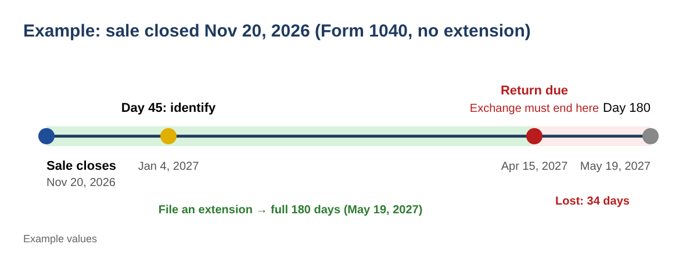
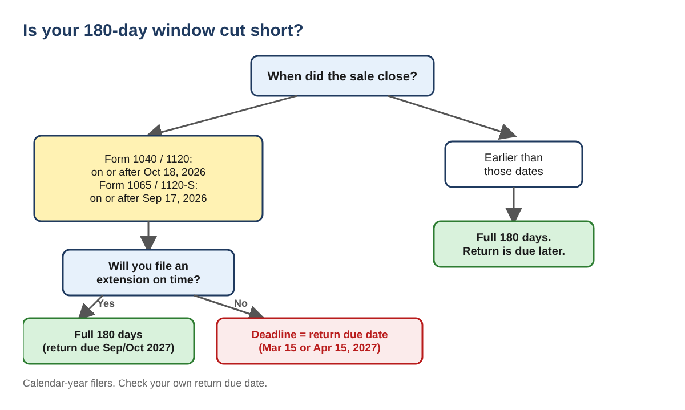
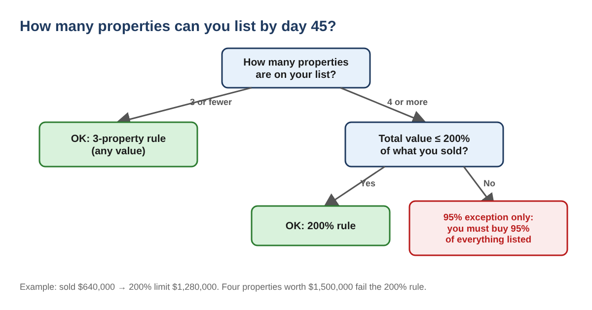
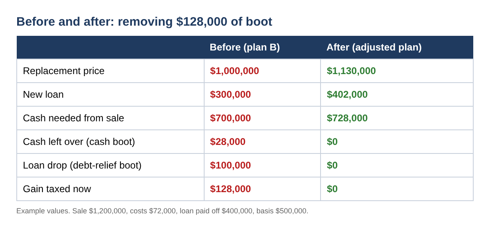

1031 Exchange Deadlines: How to Find Your 45-Day and 180-Day Dates (and the Tax Return Trap for Late-2026 Sales)
↓ Get the free Excel + PDF kit for this article
If you sold a rental, a store building or other investment real estate this year and plan to roll the gain into a new property with a 1031 (like-kind) exchange, two clocks started the day your sale closed. Miss either one and the exchange can fail, which can make the whole gain taxable this year. Sales that close in the last few months of 2026 have a third problem many owners never hear about: your tax return due date can end the exchange before day 180.
This guide walks you through finding your own dates by hand, checking how many properties you may list, and estimating how much gain would be taxed now. Everything here can be done with a calendar and a basic spreadsheet.
The two deadlines in plain words
| Deadline | What you must do | How to count |
|---|---|---|
| 45-day identification period | Identify the replacement property in a signed, written notice | Ends at midnight on the 45th day after the sale closes |
| Exchange period | Receive (close on) the replacement property | Ends on the earlier of the 180th day or the due date, including extensions, of your return for the year of the sale |
Count calendar days, not business days. The rules count from the day your old property is transferred. If you sold more than one property as part of the same exchange, both periods start on the earliest transfer date. Do not count on a weekend or holiday moving the 45th or 180th day; if one lands on a Saturday or Sunday, plan to finish by the Friday before.
Step 1: Find your 45th and 180th day
Put your sale closing date in cell A2. Then type these formulas (they work in Excel and Google Sheets):
- 45th day:
=A2+45 - 180th day:
=A2+180 - Weekday check:
=TEXT(A2+45,"dddd")shows the day name;=WEEKDAY(A2+45,2)>5returns TRUE on a weekend
Format the result cells as dates. For a sale that closed on November 20, 2026, the 45th day is January 4, 2027 and the 180th day is May 19, 2027.
Step 2: Check the tax return trap
The exchange period ends on the earlier of day 180 or your return's due date for the year of the sale, including extensions. If you do not extend, the normal due date applies. For calendar-year 2026 returns, IRS Publication 509 lists these due dates:
| Return type (calendar year 2026) | Normal due date | Extended due date | A 2026 sale is cut short if it closed on or after |
|---|---|---|---|
| Individual, Form 1040 | Apr 15, 2027 | Oct 15, 2027 | Oct 18, 2026 |
| C corporation, Form 1120 | Apr 15, 2027 | Oct 15, 2027 | Oct 18, 2026 |
| Partnership or multi-member LLC, Form 1065 | Mar 15, 2027 | Sep 15, 2027 | Sep 17, 2026 |
| S corporation, Form 1120-S | Mar 15, 2027 | Sep 15, 2027 | Sep 17, 2026 |
In a spreadsheet, put the return due date in B2 (for example =DATE(YEAR(A2)+1,4,15) for Form 1040) and find your real deadline with =MIN(A2+180,B2). Days lost: =MAX(0,(A2+180)-B2).

The fix is simple but time-sensitive: file an extension for the sale year on time (Form 4868 for individuals, Form 7004 for partnerships and corporations). With the extension, the due date moves to October 15 or September 15, 2027, so the full 180 days apply.

Step 3: Pick an identification rule
By midnight on day 45 you must list the property you plan to buy. The regulations allow three approaches:
- 3-property rule: up to three properties of any value.
- 200% rule: any number of properties, as long as their total fair market value is not more than 200% of what you sold.
- 95% exception: any number and value, but only if you actually buy at least 95% of the total value you listed. In practice this means buying almost everything on the list.

Spreadsheet check: list values in C2:C9 and the sale value in E2. =COUNT(C2:C9)<=3 tests the 3-property rule and =SUM(C2:C9)<=2*E2 tests the 200% rule. If both are FALSE, the 95% exception is all that is left.
The notice must be in writing, signed by you and delivered to a person involved in the exchange who is not you or a disqualified person, usually your qualified intermediary. Describe each property clearly, such as the street address or legal description. Property you actually buy within the 45 days counts as identified.
Step 4: Estimate the boot (the part that is taxed now)
Gain is deferred only to the extent you reinvest. Anything you receive that is not like-kind real property is called boot, and your gain is taxed up to the amount of boot. The two common kinds are cash left over and debt relief, where your new loan is smaller than the loan you paid off and you did not add cash to make up the difference.
| Line (EXAMPLE values) | Formula | Example B |
|---|---|---|
| Net sale price | Sale price − selling costs | $1,200,000 − $72,000 = $1,128,000 |
| Equity held by intermediary | Net sale − loan paid off | $1,128,000 − $400,000 = $728,000 |
| Cash needed to buy | New price − new loan | $1,000,000 − $300,000 = $700,000 |
| Cash boot | MAX(0, equity − cash needed) | $28,000 |
| Debt-relief boot | MAX(0, old loan − new loan − extra cash you add) | $400,000 − $300,000 = $100,000 |
| Realized gain | Net sale − adjusted basis | $1,128,000 − $500,000 = $628,000 |
| Gain taxed now | MIN(realized gain, total boot) | $128,000 |
| New basis | Old basis + extra cash + new loan − old loan − cash boot + gain taxed | $500,000 |
Spreadsheet version: =MAX(0,(S-C-L1)-(P-L2)) for cash boot, =MAX(0,L1-L2-MAX(0,(P-L2)-(S-C-L1))) for debt-relief boot and =MIN(S-C-B,cash_boot+debt_boot) for the gain taxed now, where S is the sale price, C the selling costs, B the adjusted basis, L1 the loan paid off, P the new price and L2 the new loan.
A rule of thumb for full deferral: buy property worth at least your net sale price and reinvest all the cash equity. In Example B, raising the purchase to $1,130,000 with a $402,000 loan removes both kinds of boot.

Three worked examples
| EXAMPLE | A: Summer sale | B: Late-year sale | C: Partnership |
|---|---|---|---|
| Closing date / return | Aug 3, 2026 / 1040 | Nov 20, 2026 / 1040 | Oct 1, 2026 / 1065 |
| 45th day | Sep 17, 2026 | Jan 4, 2027 | Nov 15, 2026 (Sunday) |
| Final day without extension | Jan 30, 2027 | Apr 15, 2027 (34 days lost) | Mar 15, 2027 (15 days lost) |
| Gain taxed now | $0 | $128,000 | $1,600 |
Edge cases worth a second look
- Your home: a main home is not held for investment and does not qualify.
- Flips: property held primarily for sale is excluded.
- Equipment and vehicles: since 2018 only real property qualifies.
- Touching the money: sale proceeds paid to you can break the exchange. The intermediary must be in place before closing.
- Related parties: if you or the related person sells within 2 years, the deferred gain can become taxable, and Form 8824 is also filed for the 2 following years.
- California property bought out of state: California requires Form FTB 3840 for the year of the exchange and each later year until the deferred California gain is recognized.
- Disaster areas: IRS disaster relief notices can sometimes postpone these deadlines; check the IRS disaster relief page for your county.
Common mistakes
- Hiring the intermediary after the sale closes.
- Counting 45 business days instead of calendar days.
- Forgetting the return due date for a sale after mid-October (or mid-September for partnerships and S corporations).
- Listing four or more properties worth more than 200% of the sale.
- Taking a smaller loan without adding cash, which creates debt-relief boot.
FAQ
Does a weekend give me an extra day?
Do not plan on it. Count calendar days and finish before the weekend.
I already filed my return. Is that a problem?
For a late-year sale, the exchange period is limited by the due date of the return for the year of the sale. Talk with your tax professional right away if you filed early or did not extend.
Can I change my list after I send it?
Changes are allowed only until midnight of day 45, in the same signed, written form.
Is a loss deductible in a 1031 exchange?
No. If you have a loss, a regular sale may be better. Check with your adviser.
Which form reports the exchange?
Form 8824, filed with your return for the year you transferred the old property.
Quick checklist
- Qualified intermediary signed before closing
- Closing date entered; 45th and final days in your calendar
- Signed written ID notice delivered by day 45
- Extension decision made before the normal due date (late-year sales)
- Replacement property closed by the final day in the same taxpayer's name
- Form 8824 filed; FTB 3840 if California rules apply
You can download the ready-made 1031 Exchange Deadline & Boot Calculator 2026 for free in the Free kit download box below (Excel + PDF guide, no sign-up).
This article is for education only and is not tax, legal or investment advice. Rules can change and your facts matter. Confirm your plan with your qualified intermediary and a tax professional. All numbers in the examples are made up. Rules checked in November 2026.
Free kit download
Tools to follow this article step by step. No sign-up needed.
- Excel workbook (.xlsx)1031_Exchange_Deadline_Calculator_2026_EN.xlsx · 18 KB
- Step-by-step guide (PDF)1031_Exchange_Guide_2026_EN.pdf · 65 KB
Free to use for yourself and your own business; please do not resell or redistribute. General information, not tax, legal or accounting advice; check every figure against your own records.